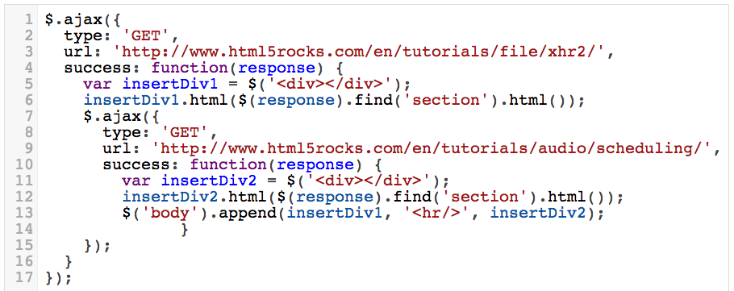
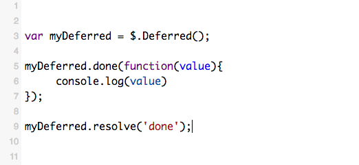
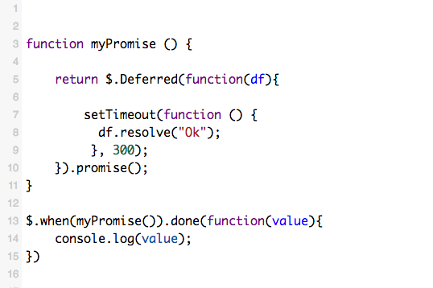
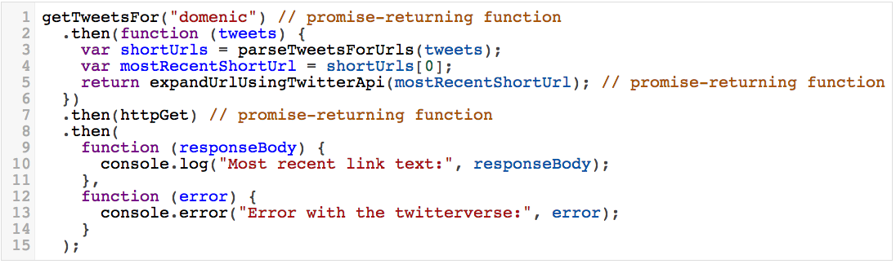

Dedferred / Promise Pattern using jQuery
Verschooren Glenn | Boulevart N.VWhy Promises?
pyramid of doom
Deffered?
- chainable utility object created by calling the jQuery.Deferred() method
- Starts in pending state, can only resolved once
- One resolve can call multiple listeners
- Has functions like (reject(), resolved(), promise())
- The Deferred object is chainable
Promise?
- Listening and state inspection (using state()), but no interface for changing the state
- Basic listeners are done() and fail()
- Can be chained with then()
- Can be grouped and processed using $.when()
How?
Conical Deferred
Setting up a listener and triggering it with resolve
Conical promise + when
Return a Promise from a method and attach a listener to it (can have more than one)
 Fiddle exampleDealing with Rejection
Jquery Deferred / Promises VS Native Javascript
Fiddle Jquery example Fiddle native javascript example Example from Domenic Denicola's blog post "You're Missing the Point of Promises", go and read it now!
jQuery is missing the point
A promise is defined as an object that has a function as the value for the property then:
then(fulfilledHandler, errorHandler, progressHandler)
This function should return a new promise that is fulfilled when the given fulfilledHandler or errorHandler callback is finished. This allows promise operations to be chained together. The value returned from the callback handler is the fulfillment value for the returned promise. If the callback throws an error, the returned promise will be moved to failed state.
More?
- jQuery is not the only one, see Promises/A spec and the clarified Promises/A+ spec
- If you're not already using jQuery then Q, rsvp.js or when are better with interoperability by fully adhering to the specs.